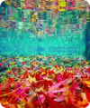

Come to Zootopia and enjoy the City Life Festival Hot778K ViewsNov 18, 2025–Jan 27, 2026Shanghai Disney Resort |10km
Louvre Museum’s First Shanghai Exhibition Now...778K Views · Newly OpenNov 18, 2025–Jan 27, 2026Museum of Art Pudong |31km
Wander into a sea of maple leaves at Jiuxi778K ViewsNine Creeks in the Misty Forest | 120km